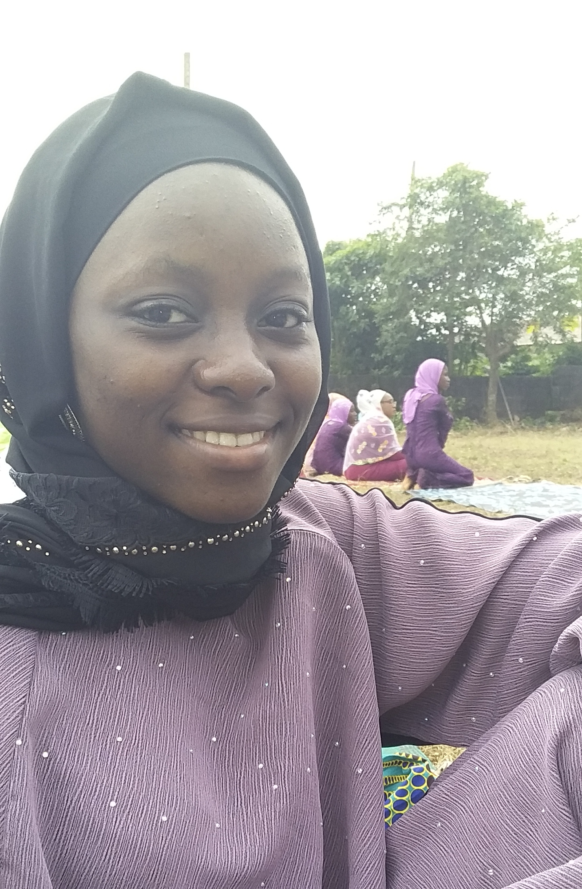

HOME PAGE
MY ACHIEVEMENT

"Achievement is something which somebody has succeeded in doing especially offer a lot of effort, great courage, skill etc. ". No one has ever achieve greatness without dream. Every achievement in life is a slave.
Is also the act of performing something profession, dreams and accomplishment.
And in life no one has ever achieve greatness without a dream
My achievement started or occur when I was in secondary school,
though I was an average student in my class then I thought I was the best out of my class then when I entered jss3 I knew
I was not as good as the rest of the student, as at that time we we're about to write our junior west African examination,
then I saw student that are more better than me academically
That motivate me the more then I was determined to-do well In the following term that was my senior secondary school,
I lessen the friends I walk with people back bite behind me I don't care because I was determined with what am doing.
I was then chosen to represent my department during the inter-departmental competition of which I won different prizes for
Then later on I saw goodness in what am doing in the sense that I gained more academically,
socially, physically, and I was pleased with myself.The life of a determined soul is achieved with focus and faith
By;
Tolani Fatima Damilola
In the Department of Library and Information Science,
College of Information and Communication Technology,
Kwara State University, Malete.
Matric Number: 17/47LS/622
CLICK MY LINK